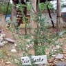

Oil Grimoire
Rose Oil

Guaiacwood Essential OilBotanical Information
Rosa damascena from the Rosaceae family, extracted from flowers. Rose oil is also called rose otto and attar of rose. Originates from Turkey. Middle note with average absorption. Roughly 2,000 genera in Rosa family including hibiscus, roses, apricots, cherries, and plums.
Scent Profile
Heavy, warm, floral with hint of citrus. Achieves harmony, thoughts of love, sense of well-being.
Herbal Lore
Associated with love, romance, and decadence, one of most recognizable scents in world. Slender Valentine's Day rosebuds differ from riotous, full, beautiful pink buds making most notable aromatherapy essential oil.
Persian scientist Avicenna credited for discovering steam distillation in 11th century just to produce rosewater. So entranced he wrote entire book on it. His search for perfect way to preserve roses and study healing effects laid groundwork for what would become aromatherapy.
Magick of rose is manifold. Long associated with love but this not only power rose holds. Associated with healing as long as love and romantic arts. Historic charm for lightning strike victims: crushing roses and purslane together as poultice for burns. Rose contains large dose of vitamin C, reduces redness, which looked magickal to healers of time. Sources also conflate rose with magick of secrets.
Magickal Uses
Snip healthy firm rosebud inch below bulb, thread needle and pierce stem, hang to dry. Once fully dry, bless appropriately, use as pendulum to divine secrets, love relationships, forgiveness, fidelity, friendship.
Scrying Methods:
- Water: Drop of absolute in dark bowl, wait for images
- Earth: Fill wooden bowl with fresh or dried petals, toss to mix. The moving meditation induces trance
- Fire: Burn dried petals over incense charcoal for visions in smoke curls
- Air: Drop in water diffuser, watch vapor patterns
Roses costly and fetched good price at market for wealthier set. Add dried petal to wallet to ensure luck finds way into real world.
Long associated with all matters of heart. Wear drop of diluted oil behind each ear to attract love and committed relationships. (With rose largely diluted already, 3 drops in 1-ounce carrier is plenty.)
Historical references abound. Secret societies left roses on doorsteps to remind inhabitants of oaths made. Tell secrets to fresh rosebud, care for it until fades. Hang upside down to dry. Once completely dry, burn in fireplace or firesafe container. Sprinkle ashes into swiftly moving water to carry cares far from you. Remember: Burden shared is burden halved. Tell someone you trust. It helps.
Small quiet bud erupts into riot of color and scent. When change needed, anoint white candle with diluted oil, burn on Monday for emotionally smooth transition. Rose also carries calm, harmony, balance, helping there too.
Growing roses therapeutic for some, but if plants only come for end-of-life services, oil will do trick beautifully. Add drop to water diffuser while slowly breathing in through nose, out through mouth. Repeat until peace achieved and anxiety banished for another day. Also beneficial for removing stress of family clashes.
Turn off distractions (phones, TV). Music optional; try new age, classic rock, silence, or noise-canceling headphones. Place drop in diffuser, close eyes. Breathe slowly and evenly. Visualize your body, find limits of physical form where skin ends and aura begins. Fill aura with awareness from within. With each breath feel bubble of awareness stretch and grow. This genuine sense called proprioception, the link between awareness inside body and outside world. Developing this sense benefits well-being and magick around us. Allows feeling boundaries of circles witches cast and energies raised therein. By stretching mental ability, learn more about world than ever thought possible.
Responsible not merely for banishing anxiety but hex breaking and banishing as whole. To remove unwanted influences on self, home, family, or work, inscribe influence on black candle anointed with diluted oil, burn on Saturday.
Loving and whole communication is hallmark. To calm household tensions and allow open, honest, loving communication, diffuse oil or rosewater in space where discussion to take place, up to thirty minutes beforehand. Also helps calm and center emotional responses.
Goes hand in hand with added energy of love and friendship. Diffuse to bolster nerves when moving from friendship to love interest, or taking romantic relationships to next level. Reminds us we not only capable but deserve good and beautiful things. Carries energy of compassion, so even if answer is no, relationship will survive. Also instills confidence.
Associated with goddesses as long as they've had names. Using absolute as consecration oil is one of oldest uses of blessed flower. Place drop of diluted oil on objects or people to consecrate before ritual.
As anyone who handled rose knows, roses have thorns. Befitting oil for protection work. Grounded in love and friendship, particularly well suited to protecting loved ones and friends. If friend or loved one asked for protection magic, write their name on brown candle (to ground anything potentially nasty coming their way), anoint with diluted oil. Burn on Sunday.
Stuck between two suitors? Argument with friend that doesn't make sense? Provides emotional clarity. Diffuse absolute while puzzling out issues (good pros/cons list never hurts).
Scent of spiritual awakening. Daily practice: anoint third eye with diluted oil, concentrate on breath for few moments. Can make considerable difference in quality of spiritual connection. Colloquial wisdom: takes 21 days to form new habit. Try practice for 21 days, record journey. See if spiritual changes benefit further practice.
Come in such variety of colors, shapes, scents that associated with creativity, especially for artists. Daydreaming of next big project, show, or concept? Diffuse drop to allow creative juices to flow. Alternately, use diffusing salts or aroma necklace if space not conducive to water diffuser.
Those thorns aren't just for pricking thumbs. Also used to unblock stuck energy. If chakra feels blocked, anoint spot with diluted oil. Roller bottle useful if drawing sigils (symbols of power) on blocked energy spot. If energetic block in other area of life outside body, write it on white candle (purity), burn on Sunday (solar transformation, luck) to transmute stuck energy into something useful.
Contains vitamin C, removes redness, imparts dewy finish to skin. Rosewater excellent for skincare; mist face, gently wipe with cotton round to remove excess oil and dirt. Also: mist pillow before bed for cool oasis and sweet dreams. Diffuse to remind loved ones to act with honor. Avert misfortune by diffusing in home for energetic spritzing up.
Spellwork Correspondences
Rub oil from center to either end to dress the candle, from top to bottom to draw energy toward you, or bottom to top to banish. Oils are flammable; use with care. Spellwork uses include energy, love, gentleness, peace, and happiness.
Traditional Grimoire Notes
One of the most sacred and powerful of all perfumes. An oil of Venus that promotes love, beauty, artistic creativity, good health, peace, and emotional balance while dispelling anger. Incorporated into all manner of love spells and traditionally added to ritual baths.